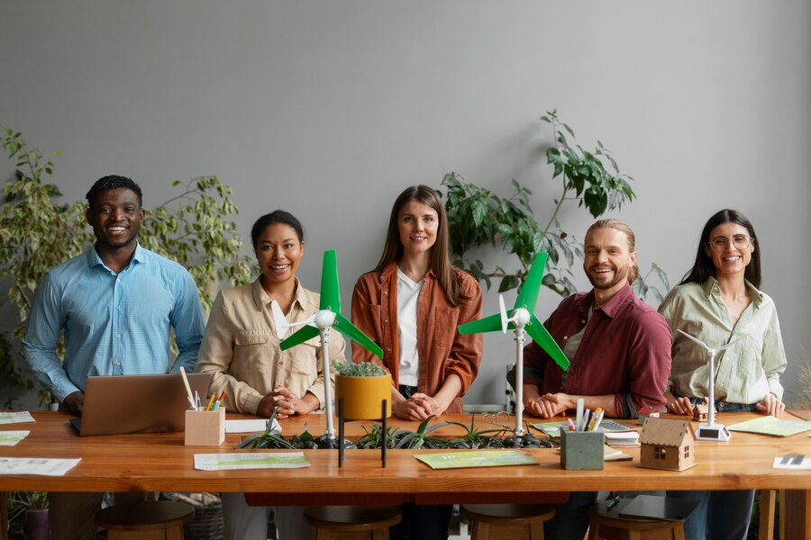
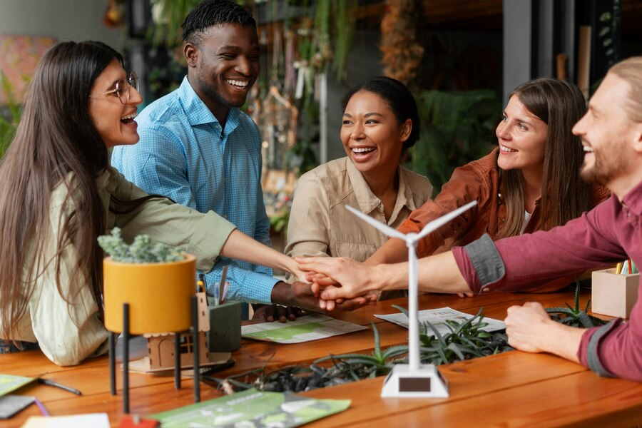
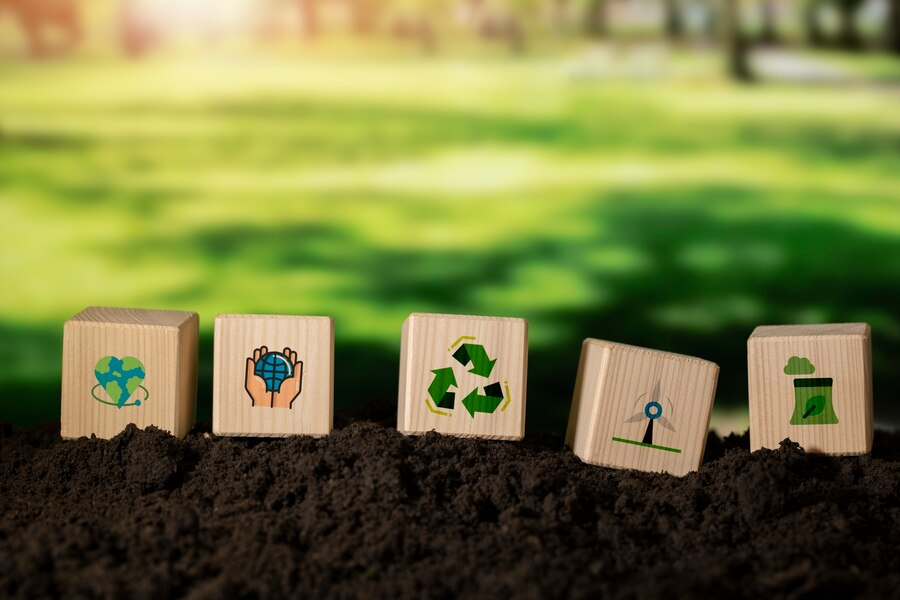

Qui sommes nous ?
Le projet Greeny est né de l’association LaManuEcology, dévouée à la préservation de la flore européenne, nous nous efforçons d'assurer la survie et l'adaptation des espèces végétales menacées à travers des initiatives de vente de graines et de sensibilisation du public. Notre engagement en faveur de la diversité biologique et de la durabilité environnementale en fait un acteur précieux dans la protection de notre patrimoine naturel commun.


Notre histoire
Notre association est née d’un groupe d'étudiants passionnés par la nature et la préservation de l'environnement. Il nous tenait à cœur de créer une entité entièrement dédiée à la cause environnementale. Sensibles à la perte d’espaces vert sur notre territoire et partout dans le monde, nous avons donc lancé un site communautaire novateur permettant l'échange de semences, de graines et de plantes. Notre objectif était simple mais puissant : faire fleurir la biodiversité dans le plus grand nombre d'écosystèmes possible. Ainsi naquit une communauté florissante, semant l'espoir d'un avenir plus vert à chaque échange de vie végétale.
Notre mission
Nous organisons régulièrement des ventes de graines de fleurs,
d'arbres et de plantes menacées. Ces événements offrent une occasion précieuse de vous
sensibiliser aux espèces en danger et de collecter des fonds pour soutenir les efforts de
conservation. De plus, en disséminant ces graines dans divers écosystèmes, l'association
contribue à promouvoir la diversité génétique et à renforcer la résilience des populations
végétales.
En diffusant les graines de plantes menacées dans différents écosystèmes, LaManuEcology joue un
rôle crucial dans la promotion de la survie et de l'adaptation des espèces. Cette approche
proactive permet aux plantes de s'acclimater à de nouveaux environnements, de s'adapter aux
changements climatiques et de coloniser des habitats propices à leur croissance et à leur
développement.
En travaillant pour préserver la flore européenne, LaManuEcology démontre son engagement en
faveur de la diversité biologique et de la durabilité environnementale. En encourageant la
protection des plantes menacées et la restauration des écosystèmes dégradés, nous contribuons à
créer un avenir plus résilient et équilibré pour les générations futures.
